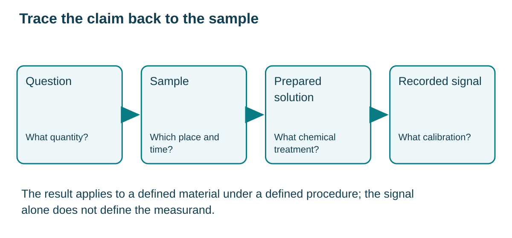

Analytical Chemistry
From a sample to a defensible chemical result
Use chemistry, measurement evidence and reproducible R calculations to answer what is present, how much there is, and whether the result is fit for its intended question. These materials cover the planned 7.5-credit course.
Download the complete student project and open analyticalchem.Rproj. Start with the R reference if you need to retrieve the introductory workflow. Student reports use R Markdown; you do not need to author Quarto pages.
Browse the interactive experiments to predict, change conditions, and explain a result before returning to R.
Topics and illustrated slides
| Topic | What you will work out | Slides | Demo |
|---|---|---|---|
| From sample to answer | Define the chemical quantity before calculating it | Open | Try |
| Sampling and preparation | Follow the material through sampling, extraction and dilution | Open | Try |
| Error and uncertainty | Separate spread, bias and uncertainty in a result | Open | Try |
| Calibration and quality control | Decide whether a signal can support a concentration | Open | Try |
| Equilibrium and titration | Use reaction stoichiometry and a justified endpoint | Open | Try |
| Electrodes and potentiometry | Read a logarithmic response without losing the chemistry | Open | Try |
| UV and visible absorption | Measure iron through a specified coloured complex | Open | Try |
| Matrix effects and recovery | Find why a good calibration can still give a biased sample result | Open | Try |
| Atomic measurements | Report an element amount through atomisation and detection | Open | Try |
| Separation principles | Connect phase exchange to retention, width and resolution | Open | Try |
| GC and HPLC | Choose an introduction and separation, then calibrate peak area | Open | Try |
| Choosing and defending a result | Build and defend the complete analytical argument | Open | Try |
Follow one result all the way back

Keep the original inputs, preparation records, R code, derived tables and rendered report together. The worked examples use simulated teaching data, with explicit range, QC and separation problems to diagnose. Read the data dictionary before interpreting them.
The analytical examples explain data and chemistry. Actual practical work uses an approved laboratory protocol for the instrument and preparation.